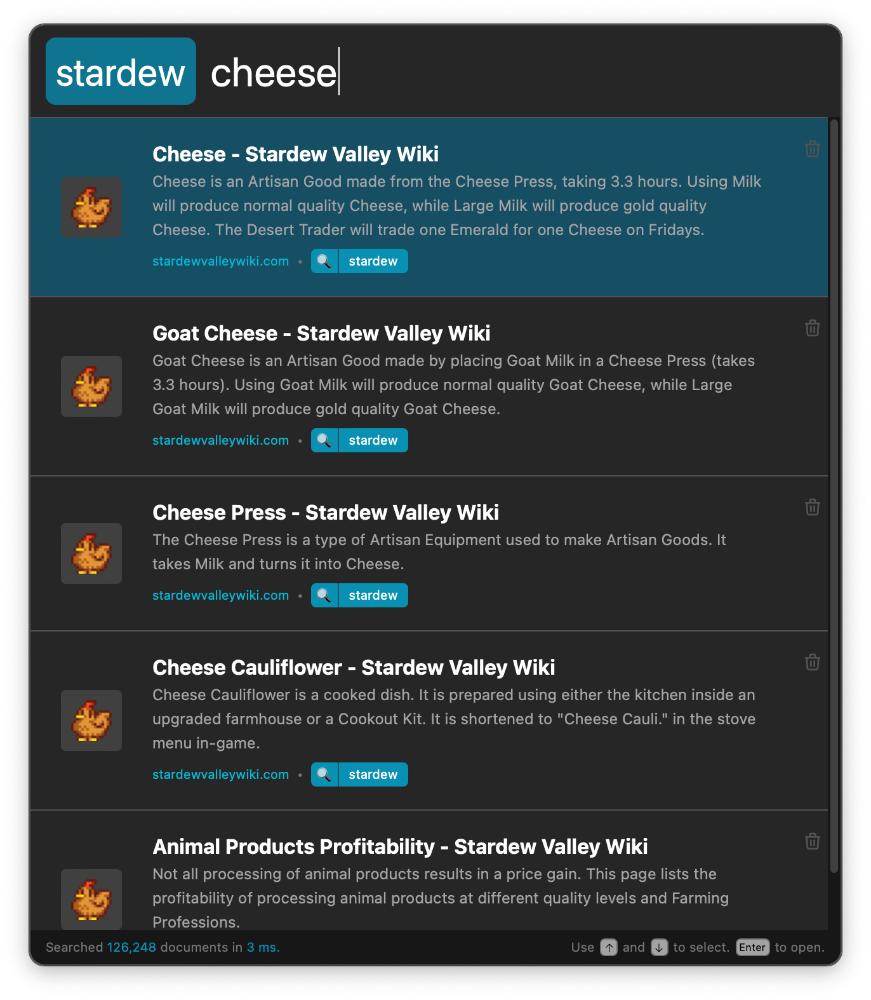
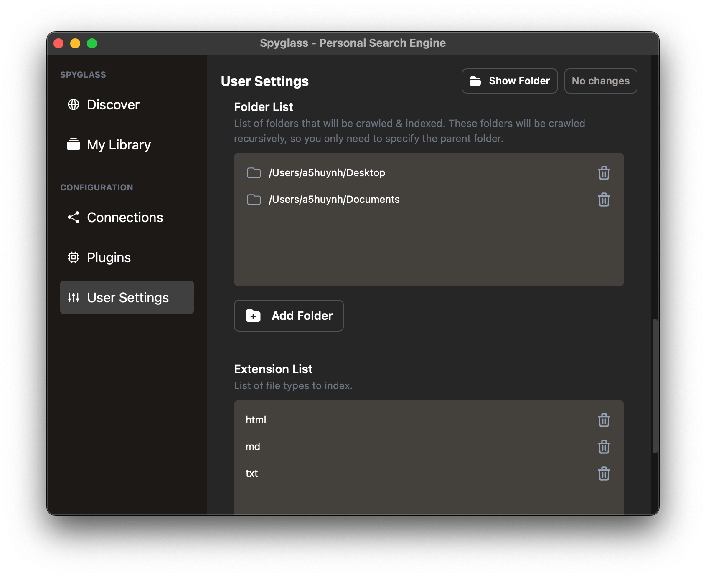

Introduction

Spyglass indexes what you want, exposing it to you in a simple & fast interface
Spyglass is a solution to address the following common issues when searching the web.
- Do you add terms such as
redditorwikito your searches to narrow it down? - Do you skip over a full-page of ads before getting to your actual search results?
- Do you scroll past dozens of SEO spam pages to find the recipe/review/blog post you were looking for?
- Do you get frustrated with overzealous autocorrect on your search terms?
Installation
⚠️ Spyglass is very much in its early stages, but it’s in a place where it's functional and can be used to replace basic searches
Spyglass is supported on all platforms. The latest release can always be found here.
| Platform | Download Link |
|---|---|
| Linux (AppImage)* | spyglass_23.3.2_amd64.AppImage |
| macOS (Intel/ARM) | Spyglass_23.3.2_universal.dmg |
| Windows | Spyglass_23.3.2_x64_en-US.msi |
- : Linux builds are built & tested on the latest version of Ubuntu. If you're using a different distro or window manager there may be some differences. Please open an issue if you find something completely broken.
Building from Source
Dependencies
Make sure you have setup the prerequisites for tauri. That should get you most of the way towards the requirements for building spyglass.
Spyglass uses TailwindCSS for styling within the application. Make sure you have NPM installed before starting the build.
A quick check-list of things you should have installed before continuing. At the time of writing, you should be able to see similar versions below:
$> rustc -V
rustc 1.61.0 (fe5b13d68 2022-05-18)
$> cargo --version
cargo 1.61.0 (a028ae42f 2022-04-29)
$> npm --version
8.10.0
NOTE:
$>represents your command line prompt.
Finally, let's setup the application dependencies. If you're running on Linux, run this first for some linux specific system dependencies.
$> make setup-dev-linux
And finally run these commands to setup the server/client dependencies.
$> make setup-dev
Building the Application
Run the following to build the application:
$> make build-release
This will kick off a release build for your platform. Depending on your OS, this
will produce a dmg (macos), msi (windows) or appimage (linux) file.
Development Builds
When running in development, it is best to have the spyglass client & backend running in two different terminal tabs/windows. Both will have their own logs that you'll need to watch.
First, build & run the backend service:
$> cargo run -p spyglass
Second, build & run the client
$> cargo tauri dev
If you're actively working on the theming of the application itself, it's best
to have tailwind in watch mode so that the CSS can be continually checked &
built.
$> npx tailwindcss -i ./public/input.css -o ./public/main.css --watch
If you're working on the default plugins, setup the PLUGINS_DEV_FOLDER variable
inside the Makefile to point to the spyglass dev/debug data folder. This will be
one of the following:
| Platform | Path |
|---|---|
| linux | /home/<username>/.local/share/spyglass-dev/ |
| macOS | /Users/<username>/Library/Application Support/com.athlabs.spyglass-dev/ |
| windows | C:\Users\<username>\AppData\Roaming\spyglass-dev\data |
To deploy plugin changes, run the following and restart your dev spyglass instance to reload the plugins
$> make build-plugins-dev
Launching & Using Spyglass
After you've successfully installed Spyglass, launch the application from where you normally find newly installed applications.
If the app has been successfully launched, you'll see a little menubar icon like the following:
On Windows, this will appear as a colorful spyglass icon in your system tray (bottom right).
On Ubuntu Linux, this will appear as a color spyglass icon in the top right.
Opening the search bar
j

Once launched, press Cmd (Ctrl) + Shift + / to open Spyglass. This hotkey
can be configured in your settings.
If for some reason this hotkey is not working, you can launch the search bar directly
with the Show search menu item.
Finding & Applying a lens
Queries prefixed with / will search through your installed lenses. Select the lens
you want to search through and hit Enter to apply it to your current search.
Selecting and Opening a Result
As you're searching, use the arrow keys to select the result you want and hitEnter
to open the link in your default browser. You may also use your house to click on any
result in the list to do the same thing.

Indexing local files
As you're onbarding you'll see the ability to enable local file searching and audio content indexing as seen below.

File Searching
Local file search will, by default, start with your Desktop and your Documents folder. You can add additional folders in your user settings.
Supported File Formats
Code file supported is rudimentary and things like symbols / class names / function names are not yet taken into account.
Code files:
c,cppjs,tsrs
Configuration / text files are treated as standard text & automatically indexed and searchable.
Config/Text files:
cfgcsvmdtomltxtyaml,yml
Word documents, spreadsheets, and PDFs are also handled automatically their content immediately searchable.
Supported document formats:
docx,odsxls,xlsxpdf
Additional extensions that you'd like to have indexed can be added through the user settings.
Audio Search
If enabled, audio search will automatically transcribe audio from any audio/video file. This is especially handy if you have saved Zoom meetings, audiobooks, or even YouTube content that you'd like to search through!
Supported formats:
aacaviflacm4amp3&mp4oggwavwebm
Adding folders to index
The file indexer plugin will recursively walk through a folder & its' children to find files. Because of this, you'll only need to add the parent folder of what you want to index.
For example, if you want to index all the files under /Users/alice/notes/personal
and /Users/alice/notes/work, you only need to add /Users/alice/notes.
To add folders, navigate to the "User Settings" and scroll down to the Folder List
setting. This takes an array of folder strings as seen below:

Click the "Add Folder" button to choose a folder to add, save your changes, and Spyglass will start indexing the contents immediately!
Indexing bookmarks
Indexing bookmarks & adding pages from the browser requires the Spyglass web extension:
Add a single page to your index
If you want to add a single page to Spyglass without bookmarking it in your browser, you can easily do this by navigating to the Spyglass icon & clicking "Add to Spyglass".
Once added or if you've already added a page, you can check the status & remove from your library.
Syncing your bookmarks
Start by toggling the sync button in the "Sync Bookmarks" tab. This will grab all your bookmarks from the browser and send them to be crawled by Spyglass.
Indexing website topics/sites
There are two ways to start indexing websites you're interested in.
- First is to install one from our list of community built lenses

- Building your own lens, which are simple text files which tell the application what to crawl & index. For example, here is a lens for recipes that I like to search for on a routine basis:
#![allow(unused)] fn main() { ( version: "1", // Be proud of your creation :). Maybe soon we can share these ;) author: "Andrew Huynh", name: "recipes", description: Some(r#" A curated collection of websites with useful, high-quality recipes. "#), // Set to false if you want to disable this lens is_enabled: true, domains: [ // Major sites that often have really good recipes "www.seriouseats.com", "cooking.nytimes.com", ... // Specific cuisines/sites that I've found randomly w/ high-quality recipes "www.hungryhuy.com", "www.vickypham.com", ], urls: [ // URLs are considered prefixed, i.e. anything that starts w/ the following // will be matched and crawled. // // https://www.reddit.com/r/recipes/ -> matches // https://www.reddit.com/r/recipes_not/ -> does not match, notice the end slash. "https://www.reddit.com/r/recipes/", ], // Rules allow you to refine how the crawler determine whether it should crawl // a URL or not. rules: [ // SkipURL is a simple regex (similar to ones in robots.txt) that when matches // a URL will skip crawling it. // // For example, below I'm skipping over any URLs that have the word "broccoli" // in the path, despite the benefits to my health. SkipURL("https://www.seriouseats.com/*broccoli*"), // Limits the depth of a URL to a certain depth. // For example: // - LimitURLDepth("https://example.com/", 1) will limit it to https://example.com/<path 1> // - LimitURLDepth("https://example.com/", 2) will limit it to https://example.com/<path 1>/<path 2> // - etc. // In this case, we're limiting to only https://www.reddit.com/r/recipes/<post> so we don't // index too many comments/etc. from reddit. LimitURLDepth("https://www.reddit.com/r/recipes", 1), ] ) }
Lenses
Spyglass expands on the ideas outlined in this paper by the Brave Search Team to allow users to define what should / should not be crawled and indexed for topics they're interested in.
Managing your library
Open the "My Library" window bygoing into the system tray menu and clicking on
the My Library option. This will open a window like below:
Here you can view the progress of any crawls or lenses being installed. View Details
will bring up the source code for the lens configuration.
Community Lenses
Spyglass has a small community that has been building lenses for different topics. You can check out the ones available to download by clicking on "Manage/install lenses" from the menubar icon to open up the "Lens Manager" as seen below.
Community lenses are downloaded from spyglass-search/lens-box.
From here, you can one-click install lenses and the crawler will happily go out and start indexing.
Precrawled and ready to search
All community lenses (and soon private lenses) come precrawled. Spyglass will download the preprocessed content from those sites & use it to update your personal index. Our crawlers currently crawl things on a monthly basis, but this will continue to improve as that infrastructure is built out.
Building your own lens
You can also create your own lenses. Once created you can drop these in your "lens"
folder, which can be opened through the My Library window.
Here are some examples that I've been personally using:
Curated recipe searching
Interested in cooking & recipes? Add a recipe lens which will go index a
curated set of websites with high quality recipes.
(
version: "1",
// Be proud of your creation :). Maybe soon we can share these ;)
author: "Andrew Huynh",
name: "recipes",
description: Some(r#"
A curated collection of websites with useful, high-quality recipes.
"#),
// Set to false if you want to disable this lens
is_enabled: true,
domains: [
// Major sites that often have really good recipes
"www.seriouseats.com",
"cooking.nytimes.com",
...
// Specific cuisines/sites that I've found randomly w/ high-quality recipes
"www.hungryhuy.com",
"www.vickypham.com",
],
urls: [
// URLs are considered prefixed, i.e. anything that starts w/ the following
// will be matched and crawled.
//
// https://www.reddit.com/r/recipes/ -> matches
// https://www.reddit.com/r/recipes_not/ -> does not match, notice the end slash.
"https://www.reddit.com/r/recipes/",
],
// Rules allow you to refine how the crawler determine whether it should crawl
// a URL or not.
rules: [
// SkipURL is a simple regex (similar to ones in robots.txt) that when matches
// a URL will skip crawling it.
//
// For example, below I'm skipping over any URLs that have the word "broccoli"
// in the path, despite the benefits to my health.
SkipURL("https://www.seriouseats.com/*broccoli*"),
// Limits the depth of a URL to a certain depth.
// For example:
// - LimitURLDepth("https://example.com/", 1) will limit it to https://example.com/<path 1>
// - LimitURLDepth("https://example.com/", 2) will limit it to https://example.com/<path 1>/<path 2>
// - etc.
// In this case, we're limiting to only https://www.reddit.com/r/recipes/<post> so we don't
// index too many comments/etc. from reddit.
LimitURLDepth("https://www.reddit.com/r/recipes", 1),
]
)
Narrowing down by a specific topic
Interested in the Rust programming language? Add the rustlang lens which will
index the Rust book, rust docs, crate.io, and other sites that are related to the
programming language and not the Rust game / The Rust Belt / oxidation / etc.
(
version: "1",
author: "Andrew Huynh",
name: "rustlang",
description: Some("Rustlang targeted websites"),
is_enabled: true,
domains: [
// Support for wildcards in domain names
"*.rust-lang.org",
"docs.rs",
"rustconf.com",
"crates.io",
"this-week-in-rust.org",
...
],
urls: [
// A `$` at the end will *only* index that particular URL and will not go
// deeper into the site.
"https://www.reddit.com/r/rust/$",
"https://www.reddit.com/r/rust_gamedev/$",
],
rules: []
)
Plugins
Spyglass supports loading WebAssembly (Wasm) modules as plugins. A limited rust API is provided to allow the plugins to interact with Spyglass. Note that plugins are in their early stages and the APIs will change over time. Please generate issues with any desired use cases or API requests.
Building Plugins
Currently plugins are a part of the spyglass system and require the same build environment as spyglass. See Spyglass Build Setup for information on how to setup your environment.
The Spyglass makefile can be used to build plugins found in the plugin directory. Before running a build verify your makefile is properly configured
Fill in
YOUR_PLUGIN_FOLDER_NAMEand the folder to yourspyglass-devfolder
Windows
# Copy the Makefile.dev.template over to Makefile.dev to setup dev related
# variables.
-include Makefile.dev
.PHONY: build-backend build-client build-plugins-dev build-plugins-release \
build-styles build-release check clippy fmt test test-with-ignored \
setup-dev setup-dev-linux run-client-dev
TARGET_ARCH := $(shell rustc -Vv | grep host | awk '{print $$2 " "}')
PLUGINS := YOUR_PLUGIN_FOLDER_NAME
# On Windows the dev folder is typically found here
PLUGINS_DEV_FOLDER := C:\\Users\\<YOUR_USER>\\AppData\\Roaming\\athlabs\\spyglass-dev\\data
Mac
# Copy the Makefile.dev.template over to Makefile.dev to setup dev related
# variables.
-include Makefile.dev
.PHONY: build-backend build-client build-plugins-dev build-plugins-release \
build-styles build-release check clippy fmt test test-with-ignored \
setup-dev setup-dev-linux run-client-dev
TARGET_ARCH := $(shell rustc -Vv | grep host | awk '{print $$2 " "}')
PLUGINS := YOUR_PLUGIN_FOLDER_NAME
# On Mac the dev folder is typically found here
PLUGINS_DEV_FOLDER := /Users/<YOUR_USER>/Library/Application\ Support/com.athlabs.spyglass-dev/
To build run the following command
$> make build-plugins-dev
This command will build the spyglass plugin and copy it to the supplied PLUGINS_DEV_FOLDER. For more information on how the plugin is installed into spyglass see Install Plugins.
Writing Plugins
Currently plugins are written in Rust and compiled using the same build system as Spyglass. An example plugin can be found here
Folder Structure
The folder structure for the plugin in spyglass follows the outline below
<SPYGLASS_REPO>/plugins/<PLUGIN_NAME>/
-------------> .cargo
---------------------> config.toml
-------------> src
------------------> main.rs
------------------> manifest.ron
-------------> Cargo.toml
Cargo.toml
The cargo file is a standard rust project cargo file (Manifest Format). Below is from the example plugin. Note that the spyglass-plugin dependency is required, but all other dependencies depend on the type of plugin being written.
[package]
name = "example-plugin"
version = "0.1.0"
edition = "2021"
license = "AGPL"
[[bin]]
name = "example-plugin"
path = "src/main.rs"
[dependencies]
serde_json = "1.0"
spyglass-plugin = { path = "../../crates/spyglass-plugin" }
url = "2.2"
config.toml
Required configuration file to define the build target
[build]
target = "wasm32-wasi"
manifest.ron
The manifest file defines the metadata associated with the plugin.
(
name: "example-plugin",
author: "spyglass-search",
description: "Example plugin to provide an example on how to create a plugin.",
version: "1",
plugin_type: Lens,
trigger: "example-plugin",
// User settings w/ the default value, this will be added the plugin environment
user_settings: {
"API_KEY": (
label: "Example Plugin API Key",
value: "",
form_type: Text,
restart_required: false,
help_text: Some("Example with custom string configuration")
),
"ENABLE_API": (
label: "Example Plugin Enable API boolean",
value: "",
form_type: Bool,
restart_required: false,
help_text: Some("Example with custom boolean configuration")
),
}
)
Name: The name of the plugin
Author: The developer of the plugin
Description: Description shown in the GUI used to explain what the plugin does
Version: Plugin version
Plugin_type: Currently we only support the Lens plugin type
Trigger: The lens trigger automatically used in search GUI
User_settings: Optional user settings. This can be used to define configuration needed by the plugin. This configuration is used by the GUI to provide input fields in the User Settings menu. All configured values are passed to the plugin through environmental variables.
main.rs
The main.rs is where the plugin code begins. The full source of an example plugin can be found here . Below are snippets of code from the example plugin.
#![allow(unused)] fn main() { use spyglass_plugin::*; #[derive(Default)] struct Plugin; register_plugin!(Plugin); }
The most basic start of a plugin is defining a struct and registering it with the system using the register_plugin! macro. After the plugin has been defined and registered the Plugin struct needs to implement the SpyglassPlugin trait.
The
SpyglassPlugintrait defines the set of required methods for a plugin
#![allow(unused)] fn main() { pub trait SpyglassPlugin { /// Initial plugin load, setup any configuration you need here as well as /// subscribe to specific events. fn load(&mut self); /// Asynchronous updates for plugin events fn update(&mut self, event: PluginEvent); } }
Implement the
SpyglassPlugintrait and define the plugins functionality
#![allow(unused)] fn main() { impl SpyglassPlugin for Plugin { fn load(&mut self) { let _ = subscribe_for_updates(); } fn update(&mut self, event: PluginEvent) { match event { PluginEvent::IntervalUpdate => { //DO STUFF HERE } PluginEvent::HttpResponse { url: _, result } => { // DO STUFF HERE } PluginEvent::DocumentResponse { request_id: _, page_count: _, page: _, documents, } => { // DO STUFF HERE } } } } }
The load method is called each time the plugin is loaded. Plugins are loaded when Spyglass starts and when a user toggles the plugin to the enabled state.
The update method is called when asynchronous events occur. This method will only be called in response to an action taken by the plugin. Example calling subscribe_for_updates() will trigger the update method to be called with the IntervalUpdate event every 10 minutes
API Helper Methods
Following is the list of API methods available for plugins. Note plugins are in active development and the API can change. Shims is a good place to check to see the current methods available.
Helper Functions
Note that all helper functions are asynchronous. All requested data will be provided through the update method asynchronously.
Log is used to write a string message into the server log. This is used for debugging. Note that due to the nature of the wasm environment println! cannot be used
#![allow(unused)] fn main() { pub fn log(msg: &str) }
Enqueue all is used to add urls to the list of urls to crawl and index. After calling this method the Spyglass system will add the urls in question to the crawl queue and index the documents as part of normal processing
#![allow(unused)] fn main() { pub fn enqueue_all(urls: &[String]) }
Delete doc will delete a document from the index. This can be used to remove documents that were added by the plugin, but are no longer needed.
#![allow(unused)] fn main() { pub fn delete_doc(url: &str) }
Modify tags is used to add or remove tags for all documents that match the query. This allows plugins to add custom tags to documents found in the index.
#![allow(unused)] fn main() { pub fn modify_tags(query: DocumentQuery, modification: TagModification) -> Result<(), ron::Error> }
Query documents can be used to access documents found in the index based on the document query.
#![allow(unused)] fn main() { pub fn query_documents(query: DocumentQuery) -> Result<(), ron::Error> }
Subscribe for documents is the same as query documents, but will run the query at a regular interval and send the results to the update method. This is useful if the plugin is designed to watch for new documents and update tags for those documents.
#![allow(unused)] fn main() { pub fn subscribe_for_documents(query: DocumentQuery) -> Result<(), ron::Error> }
Subscribe for updates will tell spyglass to send an interval update to the plugin every 10 minutes. This can be used to allow the plugin to run updates at a regular interval.
#![allow(unused)] fn main() { pub fn subscribe_for_updates() -> Result<(), ron::Error> }
Add document will add a document to the index. If a document with the same url already exists the document will be updated with the provided contents
#![allow(unused)] fn main() { pub fn add_document(documents: Vec<DocumentUpdate>, tags: Vec<Tag>) -> Result<(), ron::Error> }
Helper Structs
Http is an available struct that can be used to make http requests. Due to the type of wasm module used popular http libraries like reqwest will not work, instead we provide a basic Http helper that can be used for requests. Just like the helper functions all requests return results asynchronously through the update method.
#![allow(unused)] fn main() { impl Http { pub fn get(url: &str, headers: Vec<(String, String)>) pub fn request(url: &str) -> HttpRequestBuilder } }
Http::get("...", vec![])
Generates a get request for the specified url. The request is the same as calling Http::request(url).headers(headers).get().run()
For more options in building http requests the request method can be used.
Http::request("...")
HttpRequestBuilder is a helper used to build an http request.
#![allow(unused)] fn main() { impl HttpRequestBuilder { // Builds a request that is a get request pub fn get(&self) -> Self // Builds a request that is a put request pub fn put(&self) -> Self // Builds a request that is a post request pub fn post(&self) -> Self // Builds a request that is a patch request pub fn patch(&self) -> Self // Builds a request that is a delete request pub fn delete(&self) -> Self // Adds a body to the request pub fn body(&self, new_body: String) -> Self // Adds headers to the request pub fn headers(&self, new_headers: Vec<(String, String)>) -> Self // Add basic authentication to the request pub fn basic_auth(&self, key: &str, val: Option<String>) -> Self // Adds bearer auth to the request pub fn bearer_auth(&self, key: &str) -> Self // Runs the http request. Results will be sent to the update method pub fn run(&self) } }
Installing Plugins
Plugins are located in the plugins subfolder of the spyglass data directory. To install a plugin a folder with the same name as the plugin must be placed in the plugins folder and two files added to the plugin folder. The files required for a plugin are the plugin file main.wasm and the manifest file manifest.ron
The data directory (DATA_FOLDER in the example below) is configurable and can be found in the user settings GUI under Data Directory
The folder structure is as follows
<DATA_FOLDER>\plugins\<PLUGIN_NAME>
------> main.wasm
------> manifest.ron
main.wasm
The wasm file is the web assemble module that will be loaded into spyglass.
manifest.ron
The manifest file is the configuration file that defines details about the plugin and the list of settings needed for the plugin.
Install
To install a plugin simply place the main.wasm file and the manifest.ron files into a subfolder of the plugins folder. The proper structure can be seen above.
After copying the files into the proper directory the application will need to be restarted. After restart the plugin should be listed in the Plugins configuration section. The plugin will need to be enabled in the GUI to be loaded.
Note that if the plugin does not show up in the Plugins list there was likely an error reading the plugin configuration. Any errors reading the configuration can be found in the server log.
Settings
The settings.ron file can be found by "Show Settings folder". If there is no
file found in their directory on startup, a default one will be created.
(
// The max number of pages to index per domain
domain_crawl_limit: Finite(1000),
// The max number of crawlers per domain
inflight_domain_limit: Finite(2),
// The max number of crawlers in total
inflight_crawl_limit: Finite(10),
// Not used... yet!
run_wizard: false,
// Not used... yet!
allow_list: [],
// Domains to completely ignore, regardless of the lenses you have installed.
block_list: [
"web.archive.org",
"w3schools.com"
],
// Shortcut to launch the search bar
shortcut: "CmdOrCtrl+Shift+/",
// Where to store your index and index metadata
// The exact default location is dependent on your OS
//
// - NOTE: If you're updating this for Windows, the path needs to use double backward slashes
// like so: "E:\\spyglass\\data"
// - Linux & macOS uses paths like below
//
data_directory: "/Users/<username>/Library/Application Support/com.athlabs.spyglass",
// By default, Spyglass will only crawl things as specified in your lenses. If you want
// to follow links without regard to those rules, set this to true.
crawl_external_links: false,
// Disables sending any telemetry. Currently the only telemetry is for bug/error reporting.
disable_telemetry: false,
// Disables launching the application when your computer first boots up.
disable_autolaunch: false,
filesystem_settings: (
enable_filesystem_scanning: true,
watched_paths: [
"<PATH TO WATCH>",
],
supported_extensions: [
"docx",
"html",
"md",
"txt",
"ods",
"xls",
"xlsx",
],
),
// Port that the search daemon runs on. Change this if you have another service
// already running at this port number.
port: 4664,
user_action_settings: (
actions: [
(
label: "Copy URL to Clipboard",
status_msg: Some("Copying..."),
action: CopyToClipboard("{{ open_url }}"),
key_binding: "CmdOrCtrl+C",
),
],
context_actions: [],
),
audio_settings: (
enable_audio_transcription: false,
),
)
Updating the Shortcut
The Shortcut can be modified directly through the User Settings menu. The field will automatically record the keystrokes used. You can also type in the desired shortcut using the information below.
To update the shortcut combine the following modifiers w/ an appropriate keycode combining each key with a "+".
Supported Modifiers:
- "Option" / "Alt"
- "Control" / "Ctrl"
- "Command" / "Cmd" / "Super"
- "Shift"
- "CmdOrCtrl"
Examples:
- "CmdOrCtrl+/" => Launches the app w/
CmdorCtrl+/ - "CmdOrCtrl+Shift+/" => Launches the app w/
CmdorCtrl+Shift+/ - "Shift+4" => Launches the app w/
Shift+4
NOTE: Shortcuts are allowed to have any number of modifiers but only a single key.
For example, Shift+4 will work but not Shift+4+2
Updating User Actions
Currently user actions must be configured directly in the settings configuration file. The user actions configuration allows a user to define any number of actions that can be taken on a selected search result. When a result is selected the actions menu provides the list of currently available actions.
There are currently three types of actions that can be configured.
-
OpenApplication
Open application takes two arguments the application to open and the path to pass to the application. One Windows and Linux the application is any application that is in the systems path. On Mac the application must be a valid application in the application folder. The path is the path you want to open with the application. The below example works on Windows to open the selected file in Visual Studio Code( label: "Open In Vs Code", status_msg: Some("Opening..."), action: OpenApplication("code", "{{ open_url }}"), key_binding: "CmdOrCtrl+O", ) -
OpenUrl
Open Url works the same as OpenApplication but only takes a single argument, the url to open. This action utilizes the default system application to open the url. Note that by default pressingenteron a selected result executes the OpenUrl action with the {{ open_url }} argument. This custom action is useful if you want to modify the url. The below example modifies the url to work with Obsidian to open a markdown file that is part of an Obsidian vault( label: "Open In Vault", status_msg: Some("Opening..."), action: Open("obsidian://open?vault={{slice_path url 5 count=1}}&file={{slice_path url 6}}"), key_binding: "CmdOrCtrl+V", ) -
CopyToClipboard
The copy to clipboard action is used to copy the argument to the clipboard. This allows the user to copy the url or other information about the document to the clipboard. The below example is part of the default configuration and is used to copy the documents url to the clipboard( label: "Copy URL to Clipboard", status_msg: Some("Copying..."), action: CopyToClipboard("{{ open_url }}"), key_binding: "CmdOrCtrl+C", )
Action Configuration
The action configuration as seen above is made up of four properties
- label - This is the label shown on the action menu
- status_msg - This is the message shown in the bottom left of the search window when the action is being executed
- action - This is the action with arguments that should be executed
- key_binding - The key binding is the keyboard shortcut that will trigger the action. This allows the keyboard to be used instead of selecting the action with the mouse
As part of the action configuration, templates are typically used to define arguments. The template syntax uses the handlebars template framework. All of the default behavior defined in the handlebars documentation is supported as well as one custom function.
Context Action Configuration
Actions configured under the actions section are available for all search results. Actions defined in the context_actions section will only be available for results that match the context. Note that the same key binding for an action and context action can be used and the context action will override the action when triggering from a keyboard.
To configure context actions define a context and the action definition
(
context: (
has_tag: Some([
("type", "directory"),
]),
has_tag_type: None,
exclude_tag: None,
exclude_tag_type: None,
url_like: None,
),
actions: [
(
label: "Open in VS Code",
status_msg: None,
action: OpenApplication("code", "{{ open_url }}"),
key_binding: "CmdOrCtrl+Enter",
),
],
)
Multiple context actions can be defined and for every matching context one or more actions can be defined. The action definition follows the standard action definition. The context definition is as follows
- has_tag - Optional list of tags to match against the search result
- has_tag_type - Optional list of tag types to match against
- exclude_tag - Optional list of tags to exclude. Any search result that has one of these tags will not have these actions available
- exclude_tag_type - Optional list of tag types. Any search result that has a tag of this type will not have these actions available
- url_like - Optional list of urls that must match the url of the search result.
In the example above that action to open the url in VS Code would only be valid for search results that have the tag type=directory
Template Fields
The template fields available for each entry are as follows
- doc_id - The unique id of the document
- crawl_uri - The uri used to crawl the result
- domain - The domain for the result
- title - The title of the result
- description - The description of the result
- url - The url for the result
- open_url - The url used by default to open the result, this is a normalized url for the os
- tags - The list of tags for the result
- score - The documents score
- url_schema - The schema of the url
- url_userinfo - The user info for the url if present
- url_parent - The parent of the url
- url_port - The port of the url
- url_path - The full url path as a list of strings
- url_path_length - The length of the path
- url_query - The query string for the url if present
Custom Function
slice_path custom helper function has been added to help select parts of a path. The function requires a valid url. The syntax is as follows
{{slice_path <Template Var> <Start Index> [<End Index>] [count=<Count>] [full_uri=<true|false>]}}
- slice_path - is the function name to execute
- <Template Var> - is required and is the field to access from the selected search result, typically
url - <Start Index> - is required and is the index to start from (0 indexed)
- [<End Index>] - Optional end index, if not defined and count is also not defined then the last index in the path is used
- [count=<Count>] - Optional count is used to define the number of elements to access. This is helpful when the start index is a negative number so the end index cannot be known statically
- [full_uri=<true|false>] - Optional property used to identify if the output of slice_path should just be the path or the full uri.
Examples
url = http://test.com/a/b/c/d/e
{{slice_path url 1}}
Output - b/c/d/e
url = http://test.com/a/b/c/d/e
{{slice_path url -1}}
Output - e
url = http://test.com/a/b/c/d/e
{{slice_path url -2}}
Output - d/e
url = http://test.com/a/b/c/d/e
{{slice_path url 1 3}}
Output - b/c/d
url = http://test.com/a/b/c/d/e
{{slice_path url 1 -1}}
Output - b/c/d
url = http://test.com/a/b/c/d/e
{{slice_path url -2 count=1}}
Output - d
url = http://test.com/a/b/c/d/e
{{slice_path url -2 count=2}}
Output - d/e
url = http://test.com/a/b/c/d/e
{{slice_path url 0 -1 full_uri=true}}
Output - http://test.com/a/b/c/d
url = http://test.com/a/b/c/d/e
{{slice_path url 0 -2 full_uri=true}}
Output - http://test.com/a/b/c